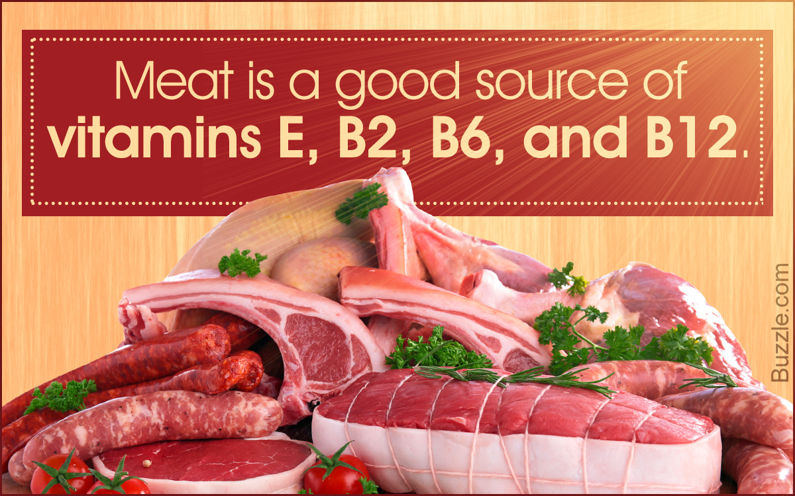
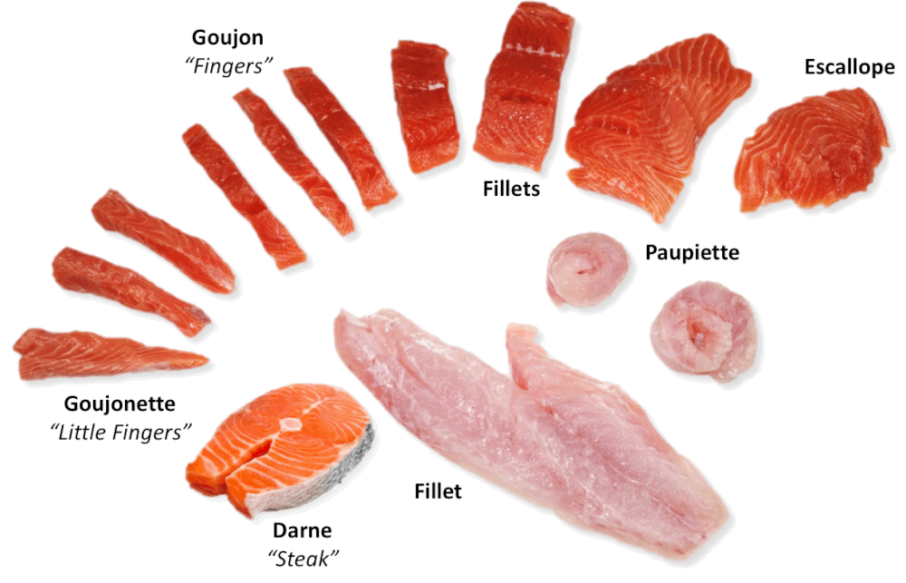

The Value of Lunch
Eating in the middle of the day, several hours after breakfast, re-energizes your body and can raise blood sugar levels when focus and concentration are flagging. If you’re feeling sluggish, eating even a small lunch can renew your energy and help you feel refreshed and ready to take on the next several hours. In addition, eating lunch keeps your metabolism active, especially if you have a moderately sized meal and a snack before and afterward.
It’s common to want to skip lunch if you’re trying to lose weight or cut calories, but that strategy almost never works.
Categories
Choose one by clicking on the image that shows what inspires you to cook the most!
Meat
Fish
Vegetables